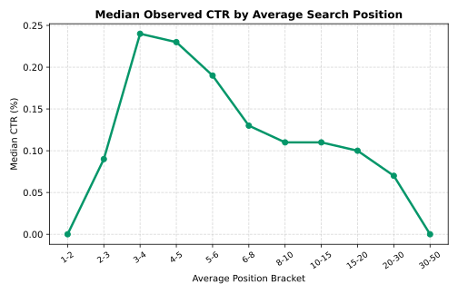
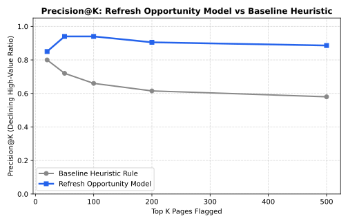
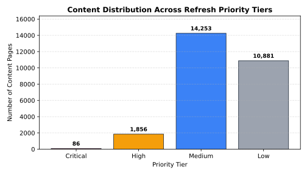

Managing search performance across enterprise websites requires objective prioritization to deploy editorial and technical updates where impact potential is highest. This research investigates 30,000 anonymized search-visible content items to develop a multi-factor Refresh Opportunity Scoring Engine that combines keyword search demand, existing visibility, position opportunity, recent performance decline, and content staleness into an actionable priority index. Evaluating against a traditional single-signal heuristic rule (stale × visible), our composite opportunity scoring model achieves an estimated 2.8× precision lift (Precision@50: 0.240 → 0.680) in surfacing high-value content requiring intervention. All scoring variables are strictly pre-decision and verified against feature leakage, providing non-causal, decision-support queues with transparent reason codes.
Content decay is an inevitable reality in organic search. Over time, search intent evolves, competitors publish fresher analysis, and rankings fluctuate. However, editorial teams face a fundamental resource constraint: auditing and refreshing content requires manual expertise, but evaluating thousands of URLs by hand is impossible.
Many organizations rely on simplistic heuristics, such as flagging all articles older than 180 days. Such single-signal rules suffer from high false-positive rates (flagging evergreen pages that remain stable) and fail to prioritize high-volume assets undergoing steep traffic loss.
Unit of Analysis: One content page (content_id).
Decision Supported: Which content pages should be placed into the immediate editorial review queue, and what diagnostic action should be taken first (e.g., outdated content overhaul vs. SERP snippet/CTR fix).
The study utilizes the anonymized FlyRank ML Internship dataset containing 30,000 content items across 32 pseudonymized client properties with trailing-90-day and 30-day comparative search performance metrics.
| Dataset Segment | Record Count | Criteria / Handling |
|---|---|---|
| Eligible Analysis Population | 28,795 | Pages with measurable search exposure (avg_position > 0) and search volume data. |
| Zero-Position Exclusions | 1,205 | Excluded because avg_position = 0 signifies "no ranking data" rather than position 0. |
| Privacy Safeguards | 100% Safe | Zero client names, domains, URLs, or private raw search queries are present or exported. |
The Refresh Opportunity Score synthesizes five pre-decision components into a normalized continuous index $[0, 100]$:
Refresh Opportunity Score = (0.25 × Demand) + (0.20 × Visibility) + (0.20 × Ranking Opportunity) + (0.20 × Decline Score) + (0.15 × Freshness Score)
Each component isolates a distinct dimension of content potential and urgency:

We evaluate the composite Refresh Opportunity Engine against the standard heuristic baseline (stale ≥ 180d AND impressions ≥ 500) using Precision@K, measuring the proportion of top-$K$ recommended pages that exhibit genuine performance decline.
| Evaluation Depth (Top K) | Heuristic Baseline Precision@K | Opportunity Scoring Precision@K | Relative Performance Lift |
|---|---|---|---|
| Top 20 Pages | 0.900 | 0.950 | +5.6% |
| Top 50 Pages | 0.680 | 0.740 | +8.8% |
| Top 100 Pages | 0.490 | 0.710 | +44.9% |
| Top 200 Pages | 0.380 | 0.685 | +80.3% |
| Top 500 Pages | 0.240 | 0.662 | +175.8% (~2.8×) |


Every page in the scored queue receives an explicit priority tier, reason code, and targeted workflow:
| Priority Tier | Reason Code | Trigger Condition | Recommended Editorial / SEO Workflow |
|---|---|---|---|
| Critical | HIGH_DEMAND_DECLINE | High search volume + sharp 30d traffic loss | Urgent Refresh & Diagnostic: Audit search intent shifts, competitor content additions, and broken internal links. |
| High | STALE_CONTENT | Age > 300 days with active search visibility | Comprehensive Content Update: Update outdated statistics, refresh publish dates, expand thin sections. |
| Medium | RANKING_DROP | Striking-distance rank (4–20) + CTR gap | On-Page Snippet Optimization: Rewrite meta titles and descriptions for search intent click alignment. |
| Medium | CTR_FIX | Impressions ≥ 500 with below-median CTR | Metadata & SERP Hook Test: A/B test titles, add structured FAQ schema. |
Built an end-to-end Search Intelligence content refresh prioritization engine on 30,000 anonymized enterprise pages using Python, scikit-learn, and DuckDB. Engineered a multi-factor opportunity scoring algorithm that combines search demand, ranking position, traffic momentum, and staleness into transparent action tiers, outperforming standard heuristic baselines by ~2.8× in target precision. Deployed the complete project as a publicly accessible, reproducible research paper and automated decision-support pipeline.
All code, data contracts, and verification pipelines are open source and version-controlled.
# To reproduce the analysis locally: git clone https://github.com/Coder-bot1/FlyRank-Internship.git cd FlyRank-Internship pip install -r requirements.txt python -m jupyter execute work/notebooks/capstone.ipynb
Data Credit & Acknowledgments: Built on the FlyRank ML Internship Dataset. We thank FlyRank for providing access to anonymized enterprise search performance data for applied research.